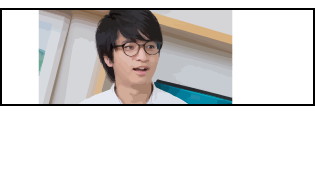

Shun Kitaura
北浦俊（きたうらしゅん） 慶應大学法学部政治学科所属/メディアコミュニケーション研究所生 サービスデザインやコミュニケーションデザインを専攻、アイデアを用いた課題解決に従事。 主な受賞歴 AdvertisingWeekAsia学生最優秀賞 2017年宣伝会議学生企画優勝 第9回Applim最優秀賞 セコムオープンラボ最優秀賞 これまでの主なクライアント トヨタ自動車、三菱電機、DNP、KDDI、dof 過去には株式会社クラフタの立上げにも従事。 現在はKeio Economic Geography(武山政直研究会）にてゼミ長を務める。 2019年より電通入社